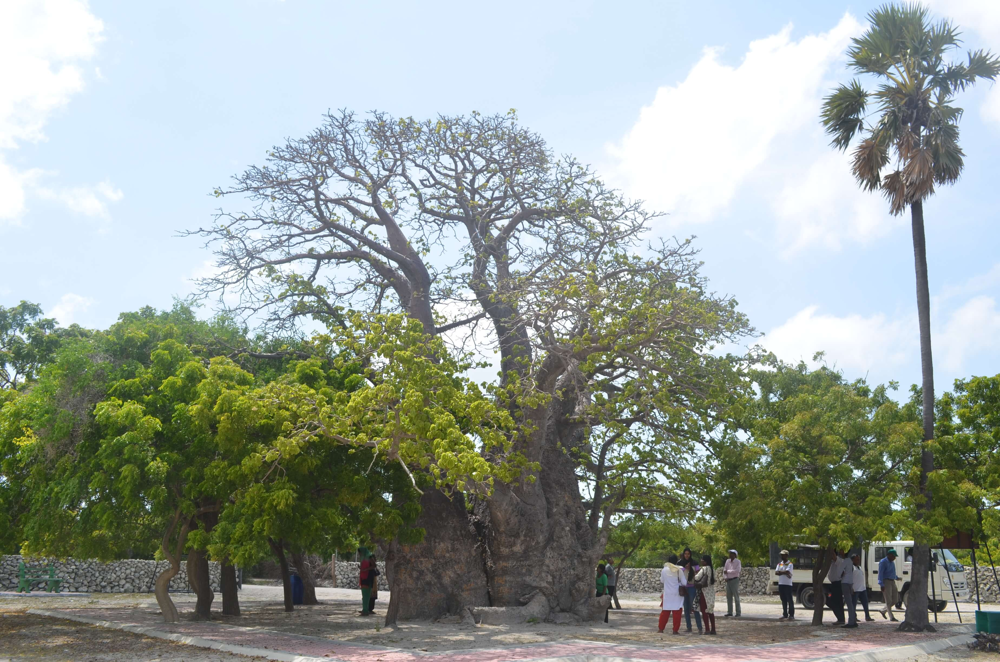
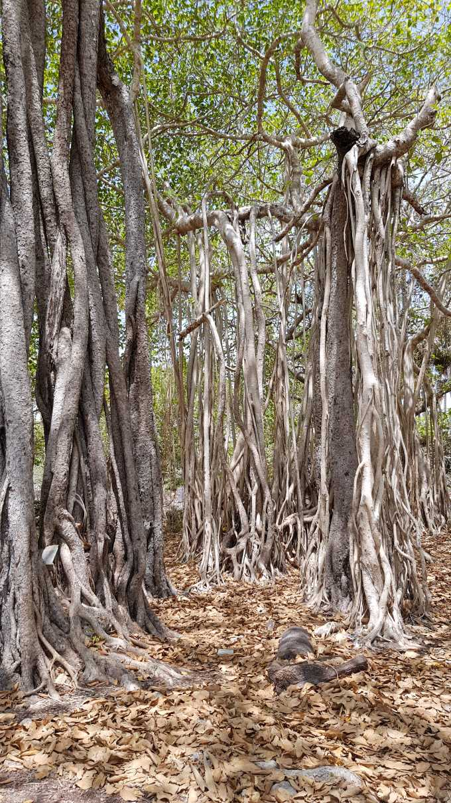
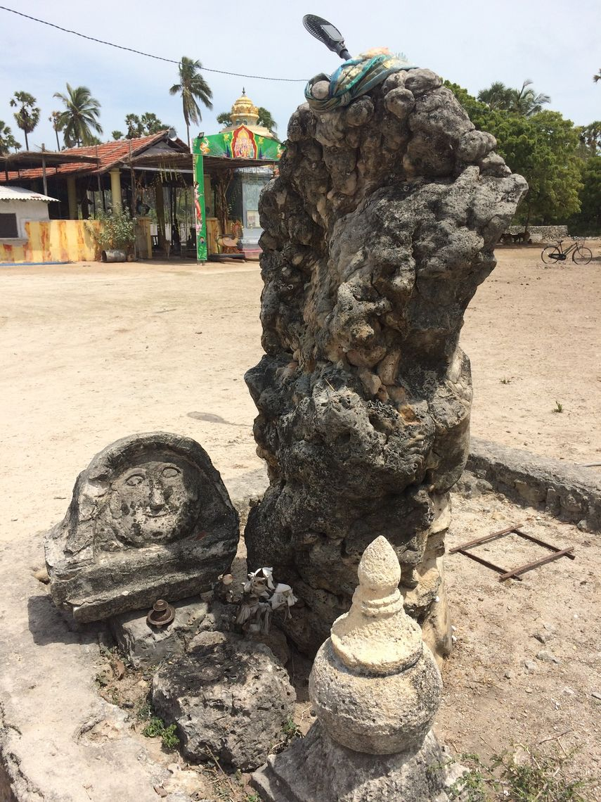
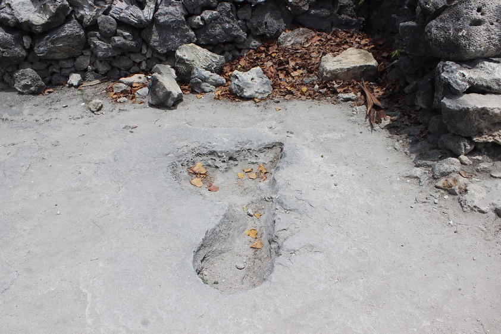
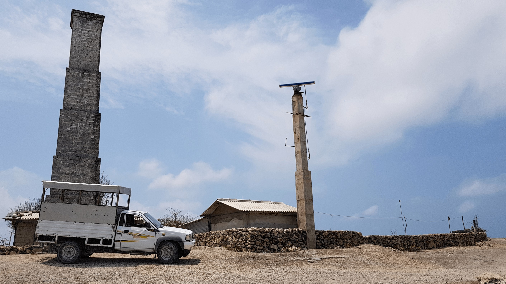
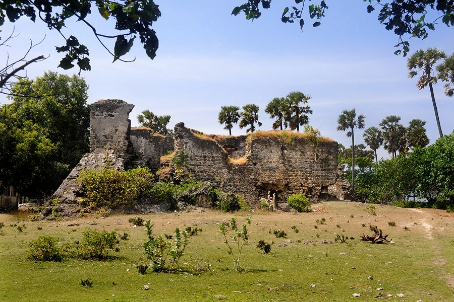
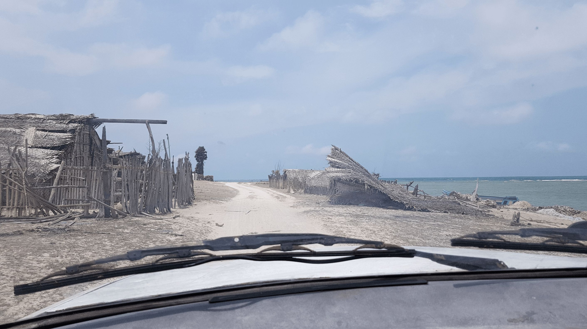
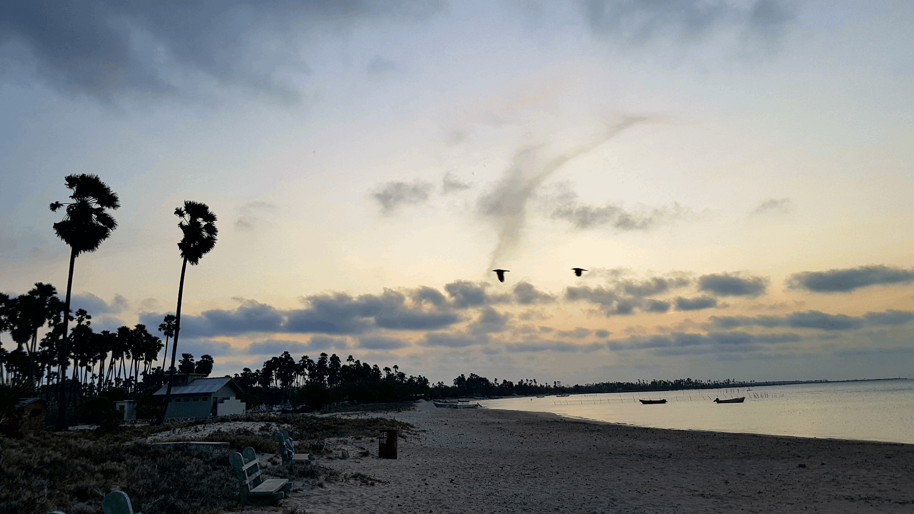
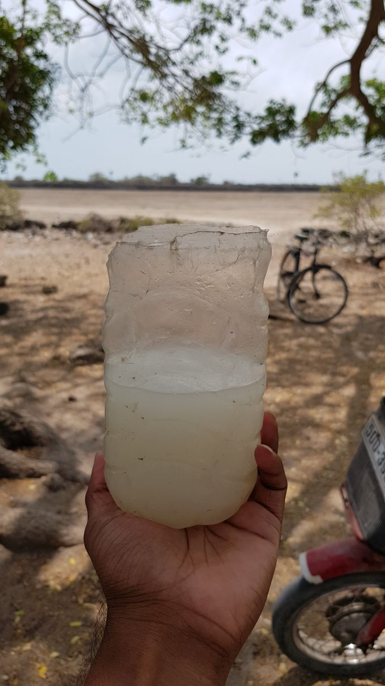

Off the Beaten Path, Finding Serenity on Delft Island
Jaffna, located in the northern part of Sri Lanka, is known for its rich cultural heritage, stunning coastline, and natural beauty. Among the many hidden gems in Jaffna is the enchanting Delft Island, located off the coast of the Jaffna Peninsula. Delft Island, also known as Neduntheevu, is a small island surrounded by crystal-clear turquoise waters and dotted with palm trees, pristine beaches, and unique wildlife. The island’s name is derived from the city of Delft in the Netherlands, reflecting the Dutch colonial influence on the island’s history. This island has a fascinating past, dating back to the Chola Dynasty and the Dutch colonial period, and is home to ancient ruins and landmarks that are worth exploring. In this travel blog, I’ll take you on a journey through Delft Island in Jaffna, sharing my experiences and recommendations for the best things to see, do, and eat on this enchanting island. So, get ready to discover the natural beauty, cultural richness, and unique wildlife of Delft Island in Jaffna.
To reach Delft Island from the mainland, there’s a public ferry service run by the Sri Lankan Navy that operates three times a day. We decided to take the morning ferry from Kurikadduwan Jetty, which departs at around 8 am. This morning ferry service can be quite crowded, as it’s primarily used by government workers who commute to the pradeshiya sabha, police station, and school on the island and are given priority.
Vessels that are used by the Sri Lankan Navy to operate the ferry service
Once you arrive at the Delft Island jetty, the Sri Lankan Navy will ask for an identity verification, and you have to present a valid National Identity Card or a valid passport. They may also ask about the purpose of the visit.
Although walking is a possible way to explore the island, it is strongly recommended that you rent a vehicle for a tour because walking in the scorching heat can be quite difficult. We decided to rent a cab that was specially designed for sightseeing and managed to cover all the major attractions in just one day.
Dutch hospital and the English Court
The hospital was built by the Dutch during their colonial rule in Sri Lanka and was used to treat the wounded soldiers of the Dutch East India Company. Later, the building was used as an administrative court complex by the British. There is an inscription in the door that indicates the year in which this court was established, that is, 1905, and the initials of the then-ruling King Edward VII. Along with the court, they had a prison to keep the prisoners until the court proceedings took place, an advocates chamber, and also a room for the judge. The building has now been renovated by the Archeological Department.
Another remarkable structure among the ruins is the Pigeon Cote. This building was used to house messenger pigeons used for communication during the time of the Dutch. There are around seventy pigeonholes on the building. Interestingly, the structure has mostly remained intact until today.
 Pigeon Cote
Pigeon Cote
Baobab Tree brought from Africa
The baobab tree, also known as Adansonia digitata, is native to East Africa and was introduced to Sri Lanka by Arabian traders in the 7th century. This particular baobab tree is believed to be over 800 years old, making it one of the largest and oldest baobab trees in Sri Lanka. According to some sources, the tree was brought to Sri Lanka by African laborers who were brought to the island by the Dutch to work on plantations. Others claim that the Arab traders brought the tree over in 700 A.D. during the Portuguese rule. Regardless of its origins, the Baobab tree on Delft Island remains a remarkable natural wonder and a popular attraction for visitors to Sri Lanka.
 Baobab Tree
The great banyan tree
The Banyan tree in Delft Island is located near the Baobab tree and is estimated to be over 200 years old. It has a circumference of approximately 400 feet, making it one of the largest banyan trees in Sri Lanka. The tree’s aerial roots form a network of trunks and branches that have created a natural canopy, providing shade for visitors who come to see the tree.
The banyan tree is considered a sacred tree by the locals, and many believe that it has healing powers. The tree is an important part of the local culture and a popular spot for visitors to take photos and explore the intricate root system.
 The great banyan tree
Growing Stone
Like the growing stone in Nagapooshani Amman kovil, there is another lesser-known growing stone in Delft Island. The history behind this stone is lost in time, but the elderly locals who have lived on the island their whole life claim that they have seen this stone grow over the years. The locals worship this stone, and it’s considered a small shrine where lamps are lit and offerings are made.
 Growing Stone
The Giant Footprint
A giant one metre long foot print on Limestone which locals believe is the imprint of Hindu god Hanuman’s right foot.
 The Giant Footprint
Queen’s Tower
The Queen’s Tower is a tower built by the Dutch during their rule in the country. Located on South East cost of Delft.
Used as a lighthouse or a navigation point by both the Dutch and the British. Fire was set at the base of the tower, and depending on the time of day, either smoke or fire was sent up the chimney.
 Queen’s Tower
Delft Island Fort
The fort was built by the Portuguese in the 16th century and later occupied by the Dutch in the 17th century. It is an interesting example of Portuguese military architecture in Sri Lanka and features a combination of European and local design elements. The fort was a two-story building constructed entirely out of coral and limestone. It was originally built as a small fortification to protect the island’s salt pans, which were an important source of revenue for the Portuguese.
Later, the Dutch expanded and strengthened the fort, adding several buildings, including a large warehouse, the commander’s residence, and a church. Today, the fort is in ruins, but some of its walls and buildings are still standing and can be visited by tourists.
 Delft Island Fort
In addition to these, there are a number of ancient churches, ruins of Buddhist stupas dating back to the Cholan era, and lots of wild horses that roam freely on the island. Attached below are some photos captured on the island, each accompanied by a brief description.
 A small fishing village by the edge of the island
 Sunset as seen from Delft Mavalithurai Beach
 Palmyrah toddy
Me with Supun AKA "Beba" :-D
For anyone looking for tips and recommendations about visiting Delft Island,
- There are only three ferries per day. If you are planning to do a one-day tour, take the morning ferry and hire a tuk tuk or a cab to explore the island. Be back at the jetty on time for the ferry back to the mainland.
- If you are planning on staying overnight on the island, make a hotel reservation prior. Only one hotel is on the island, and you have to book it in advance. Delft Samudra Hotel
- There are no ATM machines on the island, so take the required amount of cash with you.
- Take some snacks, chocolates, and water bottles with you as there is only one shop on the island with very limited items.
- For anyone looking for a guide, please contact Anistan via Facebook. We hired him, and he’s a trustworthy, pretty cool guy. (This is not any kind of paid promotion. Just my honest recommendation for anyone looking for a guide.
- Finally, for anyone who’s looking forward to getting wasted with Palmyrah Toddy, please contact Anistan, and he even accepts the payment with toddy ;-D